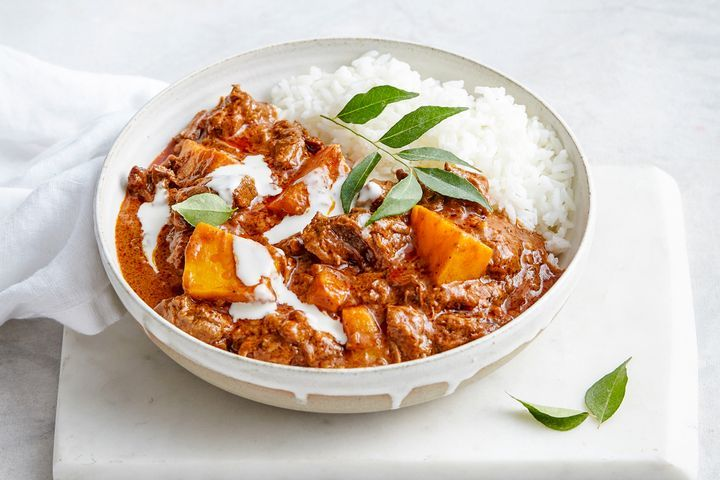

Creamy Coconut Beef and Pumpkin Curry

Creamy Coconut Beef and Pumpkin Curry
Let the crockpot do all the work with this slow-cooker Indian beef and pumpkin curry. Serve with rice for a super-easy dinner.
Ingredients
- 1 tbsp peanut oil
- 1 tbsp finely chopped fresh ginger
- 80g (1/3 cup) rogan josh curry paste
- 1.5kg beef chuck steak, cut into 4cm pieces
- Mutti Polpa Finely Chopped Tomatoes
- 250ml (1 cup) Massel vegetable liquid stock
- 1 sprig fresh curry leaves, plus extra, to serve
- 600g peeled, deseeded pumpkin, cut into 3cm pieces
- 1 tbsp Coles Cornflour
- 270ml can coconut cream
- Coles Basmati Rice, steamed, to serve
Steps
- Heat the oil in a large saucepan over high heat. Add the ginger and cook, stirring, for 1 minute or until softened. Add the curry paste and cook, stirring, for 1 minute or until aromatic. Add the beef and cook, stirring for 5 minutes or until well coated.
- Transfer the beef mixture to the bowl of a slow cooker. Add the tomato and stock. Stir to combine. Add the curry leaf. Cover and cook on High for 5 hours or until the beef is tender. Add the pumpkin. Cover and cook for a further hour or until pumpkin and beef is tender.
- Place the cornflour and 80ml (1/3 cup) coconut cream in a small bowl and stir to combine. Add to the slow cooker and cook, with the lid removed, for 10 minutes or until thickened.
- Divide the curry among serving plates. Drizzle with some of the remaining coconut cream (see note). Serve with rice and topped with extra curry leaves. Watch our step-by-step video below to see how to make our Creamy coconut beef and pumpkin curry recipe.
Home